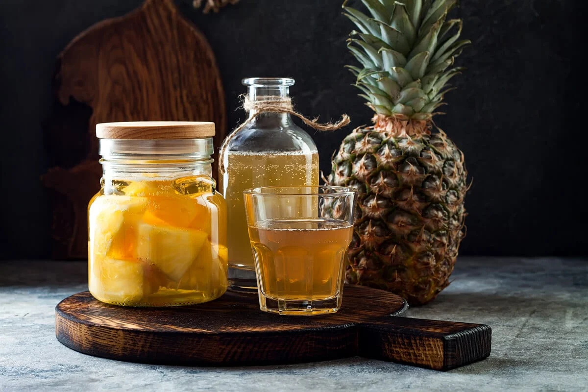

Meowscular Chef's Platter: Tepache

Image source
Sweet and refreshing pineaplle drink will privide relief to every hunter trvelling to Wildspire Waste
Serves: 8-10
Ingredients:
- 1 ripe (organic) pineapple, unwashed
- 2 cinnamon sticks
- 3 whole cloves
- 1 star anise
- 1 dried guajillo or ancho chili
- 6 oz or 170 g brown sugar
Steps:
- Slice skins off pineapple and place them into a large sanitized jar, pot, or container.
- Add cinnamon sticks, clove, star anise, chili, and brown sugar to the container.
- Fill the container with enough water to cover the other ingredients.
- Cover the container with a lid. Let sit for 24 hours in a dark, room temperature space. If fermenting in a jar or container without a weighted or airlock lid, make sure to release the built up gases every few 8-12 hours.
- After 24 hours, check for taste only if you see bubbles inside the jar and no signs of mold.
- Optionally, allow the ferment for another 12-48 hours for a more developed flavor.
- Once you've reached the desired flavor, strain mixture, and store in an airtight container in the refrigerator.
Back to main